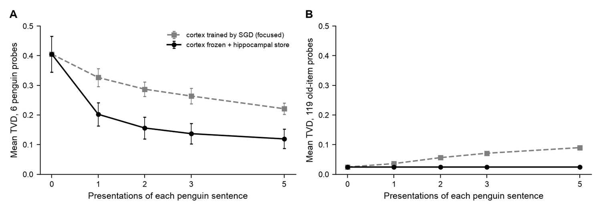
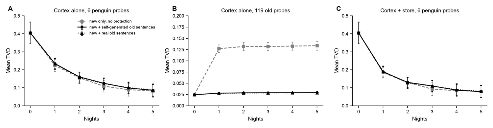

Complementary learning systems for continual learning in language models
With Jon A. Willits
Dissertation, in progress
A language model stops learning the day it is deployed. Fine-tuning it on new information overwrites what it already knew, a failure known as catastrophic forgetting. Retrieval avoids this by storing text outside the model, but the model never actually learns what it retrieves. People do not have this problem. The theory of complementary learning systems (McClelland, McNaughton, and O'Reilly, 1995) explains why: the hippocampus records new experience quickly, and the neocortex absorbs it slowly through replay during sleep.
I am building this design for language models. A slow language model plays the role of the cortex, and a fast episodic store plays the role of the hippocampus. Three ideas define the model:
- Prediction error decides what is worth remembering. The store keeps only what the language model cannot yet predict, so memory stays compact and complements the model.
- Consolidation is targeted offline replay. At night the store is replayed into the language model, and measured interference decides which old knowledge to rehearse alongside it.
- A memory is released once it is learned. When the language model can predict a memory on its own, the store lets it go.
Natural text is too noisy to say what a model should know. I therefore built a synthetic-world corpus, grounded in the semantic network of Rogers and McClelland (2004), in which every fact, its frequency, and the correct next-word probabilities are set by design. The model first learns a world of animals and plants. It then meets a penguin: a bird that swims and does not fly. Every measurement of learning, forgetting, and interference is scored against the exact correct distribution.
With an LSTM language model and five random seeds, the episodic store learns the new facts faster than fine-tuning on the same sentences, and it leaves old knowledge untouched. After one reading of each new sentence the error on the new facts is 0.20 with the store and 0.33 with fine-tuning. Error on old knowledge stays at 0.025 with the store and rises to 0.090 with fine-tuning after five readings.


A first version of consolidation also works. When the store is replayed into the language model over five nights, the model's own error on the new facts falls from 0.41 to 0.09. If old knowledge is protected by sentences the model generates itself, its error on old knowledge stays at 0.03. Without that protection it rises to 0.13.


Agents that work over long horizons need memory that turns into knowledge. This project offers a principled account of what to store, what to replay, and when to forget.